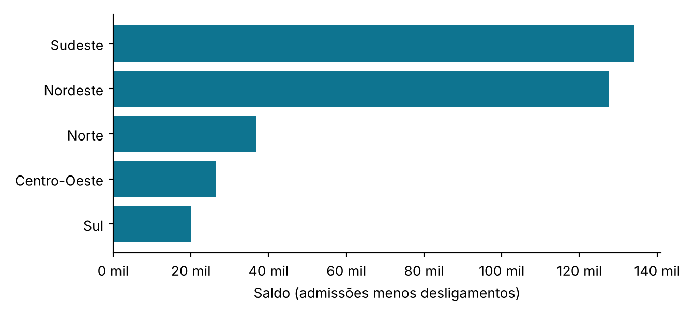
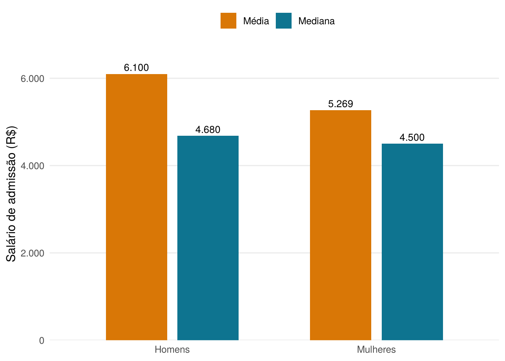

![]()
O pacote datacaged, escrito em R, grava os microdados do Cadastro Geral de Empregados e Desempregados (CAGED) em um arquivo DuckDB, por padrão chamado caged.duckdb. No entanto, esse arquivo não pertence ao R: o DuckDB é um banco analítico embutido, com bibliotecas para diversas linguagens, de modo que a mesma base pode ser lida em Python sem qualquer conversão. Além disso, um notebook Quarto (arquivo .qmd) admite blocos de código das duas linguagens no mesmo documento, e o pacote reticulate permite que os objetos criados em uma delas sejam utilizados na outra.
Dessa forma, este texto é ele próprio um notebook: os blocos marcados com {r} são executados em R, os marcados com {python}, em Python, e ambos consultam o mesmo caged.duckdb, com as competências de julho a setembro de 2026 do Novo CAGED.
Notebook para download
caged-r-python.ipynb: este roteiro em formato Jupyter, já executado e com os resultados, para abrir no Jupyter, no VS Code ou no Google Colab. O kernel é o Python, e as células em R são executadas pelo comando mágico %%R do pacote rpy2, que também faz a troca de tabelas entre as linguagens (-i e -o), no lugar do reticulate.
Requisitos
Em R, são necessários o datacaged, o duckdb, o dplyr, o tidyr, o ggplot2 e o reticulate; em Python, o duckdb, o pandas, o polars e o matplotlib:
# R
Rscript -e 'install.packages(c("datacaged", "duckdb", "dplyr", "tidyr", "ggplot2", "reticulate"))'
# Python
pip install duckdb pandas polars matplotlibRessalta-se que, a partir da versão 0.10, as versões mais novas do DuckDB leem arquivos criados por versões anteriores, mas o contrário nem sempre ocorre. Assim, recomenda-se que a versão do duckdb em Python seja igual ou superior à do pacote duckdb do R que criou o banco (neste notebook, ambas são a 2.0.0).
Passo 1 (R): carregar os microdados
O datacaged baixa, padroniza e grava os dados em um único comando. Por levar alguns minutos, o bloco a seguir não é reexecutado na renderização deste texto:
Com o banco criado, a conexão em R é feita por caged_connect(). O argumento read_only = TRUE é recomendável, tendo em vista que o DuckDB admite apenas um processo com permissão de escrita por vez:
library(datacaged)
library(dplyr)
con_r <- caged_connect("caged.duckdb", read_only = TRUE, quiet = TRUE)
DBI::dbListTables(con_r)[1] "caged_exc" "caged_for" "caged_mov"As movimentações declaradas no prazo ficam em caged_mov, as declaradas fora do prazo, em caged_for, e as exclusões, em caged_exc. Nesta etapa, o R calcula o saldo de empregos formais por unidade da federação, com dplyr; a consulta é executada pelo DuckDB, e apenas o resultado é trazido para a memória por collect():
# A tibble: 6 × 2
uf saldo
<dbl> <dbl>
1 35 79738
2 33 31431
3 26 28682
4 29 25937
5 31 23336
6 23 18632DBI::dbDisconnect(con_r, shutdown = TRUE)Passo 2 (Python): consultar o mesmo banco
Em Python, a conexão é aberta com duckdb.connect(), também em modo de leitura, e as consultas podem ser escritas diretamente em SQL. A variável saldomovimentacao assume o valor 1 para admissões e -1 para desligamentos:
import duckdb
con = duckdb.connect("caged.duckdb", read_only=True)
saldo_mensal = con.sql("""
SELECT
competenciamov::INT AS competencia,
SUM(CASE WHEN saldomovimentacao = 1 THEN 1 ELSE 0 END)::INT AS admissoes,
SUM(CASE WHEN saldomovimentacao = -1 THEN 1 ELSE 0 END)::INT AS desligamentos,
SUM(saldomovimentacao)::INT AS saldo
FROM caged_mov
GROUP BY 1
ORDER BY 1
""").df()
saldo_mensal competencia admissoes desligamentos saldo
0 202607 2262888 2204320 58568
1 202608 2294563 2128736 165827
2 202609 2214437 2093132 121305Os valores coincidem com o saldo divulgado mensalmente pelo Ministério do Trabalho e Emprego (MTE) e com os indicadores do emprego formal publicados neste site.
A consulta seguinte calcula o salário de admissão de contadores (código 252210 da Classificação Brasileira de Ocupações, CBO) por sexo, considerando apenas vínculos não intermitentes com salário entre R$ 500 e R$ 60.000, critério que reduz a influência de valores registrados com erro. No Novo CAGED, a variável sexo assume o valor 1 para homens e 3 para mulheres.
contadores = con.sql("""
SELECT
CASE sexo WHEN 1 THEN 'Homens' WHEN 3 THEN 'Mulheres' END AS sexo,
COUNT(*) AS admissoes,
ROUND(MEDIAN(salario)) AS salario_mediano,
ROUND(AVG(salario)) AS salario_medio
FROM caged_mov
WHERE cbo2002ocupacao = 252210
AND saldomovimentacao = 1
AND indtrabintermitente = 0
AND salario BETWEEN 500 AND 60000
GROUP BY 1
ORDER BY 1
""").df()
contadores sexo admissoes salario_mediano salario_medio
0 Homens 4173 4680.0 6100.0
1 Mulheres 6344 4500.0 5269.0Nota-se que as mulheres responderam pela maior parte das admissões de contadores no período, porém com salário de admissão inferior ao dos homens, tanto na mediana quanto na média.
Passo 3: trocar resultados entre as linguagens
O reticulate torna os objetos de uma linguagem visíveis na outra: em Python, os objetos do R ficam em r, e, em R, os objetos do Python ficam em py. Assim, o Python pode receber o saldo por unidade da federação calculado em R no Passo 1 e acrescentar as regiões com Polars:
import polars as pl
regioes = {1: "Norte", 2: "Nordeste", 3: "Sudeste", 4: "Sul", 5: "Centro-Oeste"}
saldo_regiao = (
pl.from_pandas(r.saldo_uf)
.with_columns((pl.col("uf") // 10).cast(pl.Int64).replace_strict(regioes).alias("regiao"))
.group_by("regiao")
.agg(pl.col("saldo").sum().cast(pl.Int64))
.sort("saldo")
)
saldo_regiao| regiao | saldo |
|---|---|
| str | i64 |
| "Sul" | 20171 |
| "Centro-Oeste" | 26536 |
| "Norte" | 36726 |
| "Nordeste" | 127471 |
| "Sudeste" | 134239 |
Ressalta-se que o primeiro dígito do código de unidade da federação do Instituto Brasileiro de Geografia e Estatística (IBGE) identifica a região, o que dispensa uma tabela auxiliar. O gráfico, por sua vez, pode ser feito em Python, com matplotlib (Figura 1):
import matplotlib.pyplot as plt
fig, ax = plt.subplots(figsize=(7, 3.2))
ax.barh(saldo_regiao["regiao"], saldo_regiao["saldo"], color="#0e7490")
ax.xaxis.set_major_formatter(lambda x, p: f"{x / 1000:.0f} mil")
ax.spines[["top", "right"]].set_visible(False)
ax.set_xlabel("Saldo (admissões menos desligamentos)")
plt.tight_layout()
plt.show()
Fonte: elaborado pelo autor com dados do Novo CAGED/MTE (2026).
No sentido inverso, o R recebe a tabela de contadores calculada em Python no Passo 2 e produz o gráfico com ggplot2 (Figura 2):
library(ggplot2)
contadores <- py$contadores |>
tidyr::pivot_longer(c(salario_mediano, salario_medio),
names_to = "medida", values_to = "salario") |>
mutate(medida = if_else(medida == "salario_mediano", "Mediana", "Média"))
ggplot(contadores, aes(sexo, salario, fill = medida)) +
geom_col(position = position_dodge(width = 0.7), width = 0.6) +
geom_text(aes(label = format(salario, big.mark = ".", decimal.mark = ",")),
position = position_dodge(width = 0.7), vjust = -0.4, size = 3.5) +
scale_fill_manual(values = c("Mediana" = "#0e7490", "Média" = "#d97706"), name = NULL) +
scale_y_continuous(labels = function(x) format(x, big.mark = ".", decimal.mark = ","),
expand = expansion(mult = c(0, 0.1))) +
labs(x = NULL, y = "Salário de admissão (R$)") +
theme_minimal(base_size = 12) +
theme(panel.grid.minor = element_blank(), panel.grid.major.x = element_blank(),
legend.position = "top")
Fonte: elaborado pelo autor com dados do Novo CAGED/MTE (2026).
Passo 4 (Python): exportar um recorte
Por fim, o DuckDB permite exportar qualquer consulta para Parquet ou CSV, o que facilita o compartilhamento de recortes com quem não utiliza o banco:
con.sql("""
COPY (SELECT * FROM caged_mov WHERE uf = 24)
TO 'caged_rn_2026t3.parquet' (FORMAT parquet)
""")con.close()Considerações
Em suma, o caged.duckdb funciona como um ponto de encontro entre linguagens: o datacaged cuida do download, da padronização e da atualização dos microdados, e R e Python realizam a análise sobre o mesmo arquivo, sem duplicação de dados. Em um único notebook, cada etapa pode ser escrita na linguagem mais conveniente, seja o dplyr e o ggplot2 no R, seja o pandas, o Polars e o matplotlib no Python, com os resultados circulando entre elas por meio do reticulate.